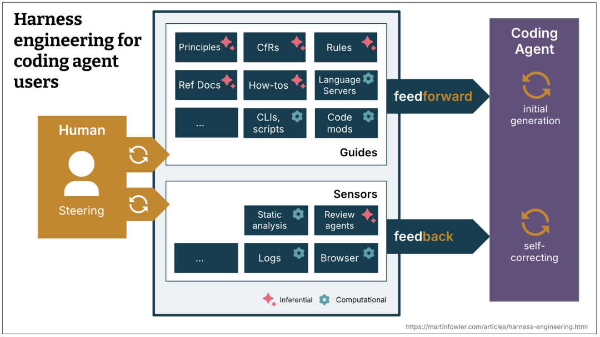
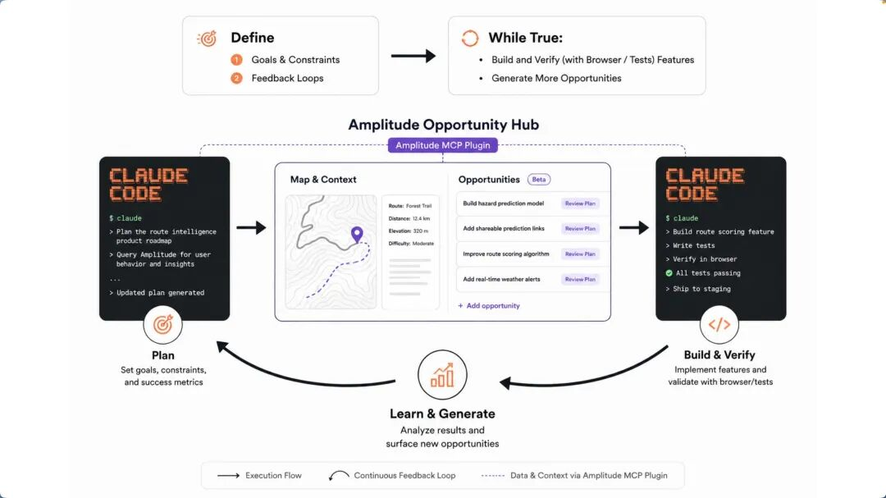
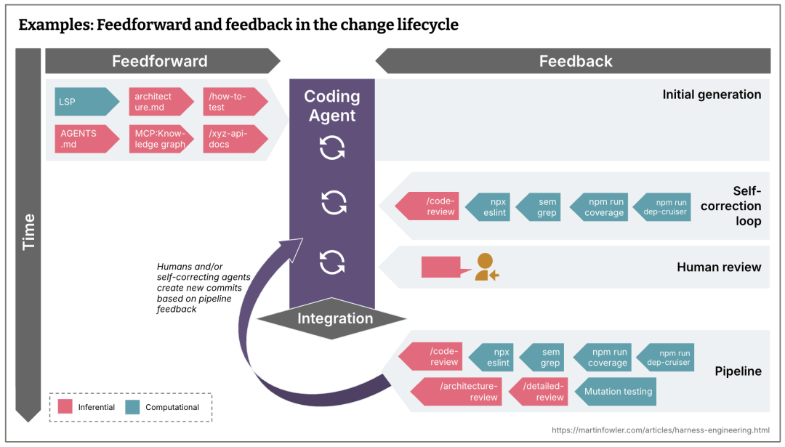

Loop engineering：把 agent 放进工程循环
来源：微信公众号 归档日期：2026-09-21 抓取状态：成功 原文字符：10824｜配图：5 张
摘要速览
- 如何为 agent 设计可靠的自动化工程循环？介绍 Loop engineering 的思路：把 agent 放进工程循环里持续迭代。
核心内容
- 原文已完整抓取，按章节分层；细节以「原文沉淀」为准。
- 配图 5 张已本地化到
_assets/20260921-Loopengineering把agent放进工程循环/。
可执行启发
- 按原文目录定位相关章节精读。
- 引用数据/步骤时打开对应小节，避免只看摘要。
我的想法
（待补充）
原文沉淀
目录
- 摘要
- 概念界定：先把 loop 说清楚
- 研究背景与相关工作：
- 系统构成：六个组件
- ▐ 4.1 Automations：心跳，不是大脑
- ▐ 4.2 Worktrees：并行之前先隔离
- ▐ 4.3 Skills：把项目知识写到系统外面
- ▐ 4.5 Sub-agents：maker 和 checker 分开
- ▐ 4.6 Memory：状态必须在对话之外
- 方法示例：一个真实可用的 loop
- 自动化判定标准：
- 风险分析：loop 的几个失败模式
- ▐ 7.1 目标函数太粗
- ▐ 7.2 验证被 agent 自己吞掉
- ▐ 7.3 状态文件没人读
- ▐ 7.4 并行制造理解债
- ▐ 7.5 成本没有上限
- 工程责任：工程师还剩什么
- 结论
- 附录
- 团队介绍
- ¤ 拓展阅读 ¤

本文探讨了“Loop engineering”这一理念，即工程师不再逐轮提示agent，而是设计包含读取状态、判断任务、执行操作、验证结果、记录状态和判断停止条件的自动化循环系统。文章详细拆解了支撑该系统的六大组件：负责唤醒的自动化机制、隔离并行的worktrees、沉淀项目知识的skills、接入外部工具的插件、分离读写职责的子agent以及确保状态持久化的记忆层。作者强调，loop engineering并非盲目追求全自动，而是通过明确输入输出、严格权限分层与成本控制来保障工程可靠性。工程师的角色从单轮操作者转变为循环机制的设计者与最终责任人，其核心价值在于利用可控的自动化杠杆加深对系统的理解，而非单纯甩锅给AI以逃避责任。

摘要
最近，coding agent 圈子里有一句话传得很快：不要再只是提示 agent，要设计提示 agent 的 loop。
这句话容易被误读成一个新名词。其实它说的是一个老问题：当工具开始能自己读代码、改代码、跑测试、开 PR 以后，工程师的工作重心会往哪里移？
过去的用法很直接。你写 prompt，agent 回答。你贴报错，agent 修改。你看 diff，继续追问。人一直握着方向盘。
Loop engineering 处理的是另一层工作。你不再亲自推动每一轮，而是设计一个小系统，让它按固定节奏发现任务、选择下一步、调用 agent、检查结果、记录状态，并决定是否继续。人还在系统里，只是位置变了：从每一轮的操作者，变成循环机制的设计者和最后的责任人。
这个变化有用，但也很容易变成另一种自动化幻觉。
最近我看到在 HN 和 Reddit：有人在转 Addy 的文章，也有人直接问"loop engineering 是不是又一个 buzzword"。这种怀疑不是坏事。loop engineering 如果只是给自动化换个名字，确实没什么意思；只有当它把状态、验证、权限和停止条件都写进工程流程里，它才和普通的"让 agent 多跑几轮"不一样。
概念界定：先把 loop 说清楚
这里的 loop 不是 while true，也不是把一个 prompt 定时重放。
一个能工作的工程 loop 至少有六个动作：
- 读取外部状态：CI、issue、PR、日志、用户反馈、代码 diff。
- 判断下一步：哪些问题值得处理，哪些应该忽略，哪些需要人判断。
- 执行任务：让 agent 查代码、改代码、写测试或更新文档。
- 验证结果：运行测试、复现路径、浏览器检查、代码审查或安全扫描。
- 写入状态：把结论、失败原因、已尝试方案和下一步写到对话之外。
- 判断停止条件：继续、重试、换策略、升级给人，或者结束。
少了第 5 步，它只是一次会话。少了第 6 步，它就是烧 token 的定时器。
这也是为什么 Addy Osmani 在《Loop Engineering》[1]里把它放在 agent harness 之上。Harness 解决的是一个 agent 在什么环境里运行；loop 解决的是这些 agent 什么时候被唤醒、拿什么上下文、做哪类事、由谁检查、状态放在哪里。
这里还要补一层。Birgitta Böckeler 在 Martin Fowler 网站上的《Harness engineering for coding agent users》[2]把 harness 拆成两类控制：事前的 guides，事后的 sensors。前者把规则、架构约束、技能文档和上下文喂给 agent；后者用测试、lint、日志、浏览器、review agent 或安全扫描让 agent 自我修正。放到 loop 里看，harness 是控制件，loop 是调度和闭环。只有调度，没有控制件，就是定时犯错；只有控制件，没有循环，就还是一次性工具。

图 1. Harness engineering overview。来源：Harness engineering for coding agent users [3]。
更直白地说：prompt engineering 关心一句话怎么写。context engineering 关心给模型什么材料。harness engineering 关心工具、权限和运行环境。loop engineering 关心这些东西如何持续运转。
研究背景与相关工作：
为什么现在讨论 loop
因为产品能力正在凑齐。
Codex app 文档里已经能看到 automations、worktrees、skills、plugins、MCP、subagents、memories，以及 Goal mode。
Claude Code 也在往同一类工作流靠近：scheduled tasks、/loop、goals、hooks、skills、subagents、worktrees 和 MCP。名字不同，形状很接近。
这不表示两个工具完全等价。权限、持久化、审计和执行环境的差异会影响能不能放到生产流程里。但从工程模式看，大家都在往同一个方向走：agent 不再只是聊天框里的代码助手，它开始被放进持续运行的工程流程。
OpenAI Cookbook 里的 agent improvement loop 也在讲类似思路：真实 traces 是输入证据，人工和模型反馈负责诊断，eval 变成可复用验收，handoff artifact 把下一轮要改什么写下来，最后再交给 Codex 修改 agent 或 harness。它有价值的地方不在"让 AI 改 AI"，而在于把反馈、验证、状态和权限边界接到同一个流程里。
Amplitude 的 Ralph loop 实验[4]更激进。它把产品数据、机会生成、浏览器验证和 coding agent 接在一起：每轮先构建下一个 opportunity，再用浏览器点通新功能，生成新的机会队列。作者还让 agent 给自己产出的功能埋点，下一轮就能看到哪些路径被用过、哪里卡住；每个 PR 附一个浏览器录制的 GIF，当作验证证据。到后期，他只允许少数低风险机会类型自动合并，涉及用户数据的改动仍然保留人工判断。

图 2. Ralph Loop。来源：What I Learned Pointing a Ralph Loop at My Product for a Week[5]。
最近的研究也在拆这个问题。论文《Engineering Robustness into Personal Agents with the AI Workflow Store》[6]盯着 on-the-fly agent loop 的弱点：agent 临场合成计划、临场串工具，速度很快，但很容易跳过软件工程里那些麻烦却必要的步骤，比如迭代设计、严格测试、对抗评估和分阶段发布。它的答案不是让 agent 更会即兴发挥，而是把可靠流程沉淀成可复用、受约束的 workflow。
另一篇《EurekAgent》[7]说得更像工程实践：权限、artifact、预算和 human-in-the-loop 不只是配套设施，它们会直接改变 agent 做事的方式。这两篇都不是在说"loop 越自动越好"，而是在说 loop 要能复用、能审计、能限制。
这组案例说明，loop engineering 的重点不是自动化程度，而是控制面。你设计的是任务入口、判断标准、权限边界、记忆方式、验证机制和停止条件。
系统构成：六个组件
▐ 4.1 Automations：心跳，不是大脑
Automation 负责把 loop 唤醒。
Codex 的 automations 可以按计划在项目上运行，结果进入 Triage inbox；如果没有发现，也可以自动归档。它还能结合 skills，把重复任务变成可维护的工作流。Claude Code 的 scheduled tasks[8] 和 /loop 则适合在一个 session 内反复检查某件事，比如部署是否完成、PR 是否有新评论、CI 是否变绿。
Hooks[9] 处在另一个位置。它不是定时器，而是生命周期事件上的确定性控制。Claude Code 的 hooks 可以在编辑后格式化代码，在工具调用前阻断敏感文件修改，在需要输入时发通知，也可以把上下文重新注入会话。放在 loop 里看，hooks 更像护栏：它不决定做什么任务，但能限制 agent 在执行过程中不能越过哪些边界。
这里最容易犯的错，是把 automation 当成智能本身。它只负责把任务按时唤醒，不负责替你定义判断标准。
所以 automation prompt 里最好同时写 feedforward 和 feedback。Feedforward 是 agent 开始前必须知道的约束：只看哪个 PR、不能碰哪些目录、什么风险必须停。Feedback 是它做完后必须接受的传感器：跑哪个测试、看哪个日志、贴哪个浏览器录制、让哪个 reviewer 读 diff。没有 feedforward，agent 会到处试；没有 feedback，它会把"我觉得可以"当成完成。

图 3. Change lifecycle。来源：Harness engineering for coding agent users[10]。
一个好的 automation prompt 应该写得像操作规程，而不是愿望清单：
- - - - - - -
读取最近 24 小时失败的 CI。
只处理和当前 PR 相关的失败。
如果失败来自依赖下载或外部服务超时，记录为 infra-flake，不改代码。
如果失败能稳定复现，创建最小修复。
每轮最多修改 3 个文件。
测试通过后写入 loop-state.md。
遇到权限、数据迁移或安全相关变更，停止并交给人。坏的写法通常是这样：
-
每天帮我检查项目，有问题就修一下。这种写法把判断权交给模型猜。
▐ 4.2 Worktrees：并行之前先隔离
多个 agent 同时工作时，第一类失败不是推理失败，而是文件冲突。
Git worktree 给每个任务一个独立 checkout。Codex app 的 worktree 支持 也是围绕这个目标设计的：让多个线程在同一个 repo 上做独立任务，不干扰本地工作。Claude Code 也支持用 worktrees 隔离并行 session。
但 worktree 只解决机械冲突。它不解决 review 带宽。
如果你每天让 8 个 agent 各开一个 PR，但你只能认真读两个 diff，那系统吞吐没有提升，只是把瓶颈从"写代码"挪到了"理解代码"。更糟的是，这种瓶颈不一定马上报错。PR 都很小，测试也可能是绿的，但你的心智模型已经落后。
所以 worktree 的设计原则应该是：并行只用于低耦合任务，合并仍然按人的理解能力限流。
▐ 4.3 Skills：把项目知识写到系统外面
没有 skills 的 loop，每次醒来都像新来的同事。它要重新猜测试命令，重新理解目录结构，重新发现团队不喜欢哪种写法。
Skill 的价值不是让 prompt 更漂亮，而是把稳定知识移出对话上下文。Codex 官方把 skill 定义为可复用工作流的编写格式，一个 SKILL.md 可以带 scripts、references 和 assets。Claude Code 也采用相近的 skills 机制。
适合写进 skill 的内容包括：
- 如何运行单元测试、端到端测试、lint 和类型检查
- 哪些目录不能碰
- 哪些改动必须加迁移脚本
- PR 描述必须包含什么
- 遇到 flaky test 如何分类
- 哪些历史事故不能重演
别把所有东西塞进一个大 skill。一个好 skill 应该小而明确，比如 triage-ci、fix-flaky-test、review-pr、frontend-qa、security-check。描述要直白，因为 agent 是根据描述决定是否加载它的。
这里有个很实际的收益：skills 省的不只是 token，还有误判。项目约定没有写下来时，agent 会用开源世界的常见模式补空白。你的项目越特殊，这种补空白越危险。
▐ 4.4 Plugins 和 connectors：让 loop 接触真实工具
只看文件系统的 loop 很快就不够用了。真实工程状态分散在 GitHub、Linear、Slack、Sentry、数据库、staging API、浏览器和 CI 系统里。
这里要分清三层东西。MCP 是工具和上下文接入协议。Connector 是面向某个外部系统的具体连接，比如 GitHub、Linear、Slack、Sentry 或 Figma。Plugin 是某些产品里的分发打包机制，可以把 skills、app integrations、MCP servers、配置和素材一起交给团队安装。plugin 只是分发和启用入口，不等于权限、审计和审批都已经设计好了。把这三层混在一起写，会误导团队以为装了一个包就等于有了完整控制面。
这一步会把 loop 从"给出建议"变成"参与流程"：
- - - - - - - - -
发现 CI 失败
读取失败日志
定位相关 commit
在 worktree 里修复
运行测试
打开 PR
关联 Linear ticket
通知 Slack
把结果写回状态文件能力变强以后，权限设计也要跟着变严格。能读日志和能改生产数据库不是同一种权限。能开 PR 和能自动 merge 也不是同一种权限。
我的建议是按风险分层：
- observe：只读，允许总结和分类。
- propose：允许生成 patch 或 PR，但不允许合并。
- act with approval：可执行外部动作，但关键步骤需要人批准。
- autonomous：只给低风险、可回滚、验证强的任务。
大多数团队不应该一开始就追求 autonomous。先把 observe 和 propose 做扎实，收益已经很明显。
▐ 4.5 Sub-agents：maker 和 checker 分开
loop 里有一条很实用的经验：写的人和查的人要分开。
写代码的 agent 不适合做唯一裁判。它刚刚花了几轮说服自己这条路线成立，很容易继续相信自己的结果。Codex subagents 文档也提到，子 agent 适合把探索、测试和日志分析这类嘈杂工作移出主线程，避免 context pollution 和 context rot。
一个稳妥的分工是：
- explorer 只读代码，定位问题和相关文件。
- implementer 做最小修改。
- verifier 复现问题、跑测试、检查验收条件。
- reviewer 读 diff，找边界条件、回归风险和过度修改。
- security reviewer 只处理权限、数据暴露、注入、依赖和密钥风险。
不是每个任务都需要五个 agent。sub-agents 会增加 token 成本，也会增加协调成本。它们适合用在两类地方：检查环节，以及可以并行的读多写少任务。
如果任务很小，一个 implementer 加一个 verifier 通常够了。
▐ 4.6 Memory：状态必须在对话之外
长期 loop 不能靠聊天记录活着。
上下文会压缩，线程会中断，模型会忘，agent 还会重复尝试同一条死路。外部状态层不是锦上添花，是 loop 能不能接着跑的前提。
Memory 可以很简单：
-
loop-state.md里面记录：
- 当前目标
- 已处理事项
- 已尝试方案
- 失败原因
- 已通过验证
- 需要人工判断的问题
- 下一轮入口
它也可以是 Linear board、GitHub labels、数据库表、PR comment 或 Codex memories。Codex memories 适合保存稳定偏好、项目约定和常见坑点，但强约束最好仍然放在 repo 文档、AGENTS.md 或 skill 里。原因很简单：团队规则应该可 review、可版本化、可共享。
一句话：模型可以忘，系统状态不能忘。
方法示例：一个真实可用的 loop
从一个低风险 loop 开始，不要从"全自动工程团队"开始。
比如 CI triage loop：
- - - - - - - - - -
每天 9:00 运行。
读取过去 24 小时失败的 CI。
按失败类型分类：真实回归、flaky、infra、未知。
只处理真实回归中影响当前 PR 的失败。
每次最多修一个问题。
必须先写复现步骤，再改代码。
修复后运行对应测试。
测试通过则开 PR 或更新当前 PR。
测试不通过则记录失败原因。
涉及迁移、安全、权限、账务、生产配置时停止。这个 loop 不性感，但能落地。它的好处是边界清楚、输入稳定、输出可 review、失败可解释。
再往前一步，可以做 review comment loop：
- - - - - -
定期读取 PR 上未解决的 review comments。
把评论分成机械修改、需要判断、无法处理三类。
机械修改直接提交 patch。
需要判断的评论整理成问题列表。
无法处理的评论说明原因。
每次修改后运行最小相关测试。这类 loop 比"帮我优化项目"可靠，因为目标和判断都没有交给模型自由发挥。
还有一种 loop 值得单独拎出来：harness maintenance loop。
- - - - - -
每周读取最近合并的 agent PR 和 review comments。
找出重复出现的失败模式：误改公共 API、漏跑迁移、测试只覆盖 happy path、过度重构。
能用确定性工具拦住的，优先补 lint、类型检查、架构规则或测试夹具。
只能靠语义判断的，更新 review skill 或 verifier prompt。
每次只改一个 harness 控制件。
记录这个控制件拦住了什么问题，以及有没有带来误报。这个 loop 不直接交付功能，但它会让后面的功能 loop 更稳。很多团队会先迷上"让 agent 写更多代码"，但更该先问的是：怎样让 agent 少犯同一种错。
自动化判定标准：
判断一个 loop 是否值得自动化
我会用五个条件筛选：
- 输入是否稳定。CI、issue、review comments、日志都可以；模糊战略问题不适合。
- 输出是否可 review。PR、报告、状态文件、ticket 更新可以；隐式修改不行。
- 验证是否明确。测试、复现步骤、schema 校验、浏览器路径可以；"看起来更好"不够。
- 权限是否可控。默认只读或提案，逐步放开执行权限。
- 失败是否可恢复。失败最多产生一个待审 patch，而不是破坏共享环境。
现在我会再加一个条件：这个 loop 的产物能不能沉淀。一次性的 agent 对话失败了，最多留下聊天记录；一个好的 loop 失败了，应该能留下更好的 fixture、更明确的 rule、更小的 skill、更稳的脚本，或者一条以后能复用的 workflow。否则你只是在反复购买同一份现场发挥。
不满足这些条件时，不要急着自动化。先把流程写清楚。
风险分析：loop 的几个失败模式
▐ 7.1 目标函数太粗
"提升质量"、"优化体验"、"让项目更好"都不是合格目标。agent 会把它们翻译成自己能做的动作，比如重构、改文案、加测试、删重复代码。动作看起来合理，但未必解决你的问题。
目标要写成可验证条件：
-
让 checkout.spec.ts 中的 3 个失败用例通过，不能修改测试断言，不能改支付网关 mock 之外的生产逻辑。▐ 7.2 验证被 agent 自己吞掉
很多 agent 会在日志很长时总结成"测试通过大部分，只剩少量无关问题"。这句话在 loop 里应该直接判失败。
验证结果必须结构化。至少要记录命令、退出码、失败用例和是否满足停止条件。
▐ 7.3 状态文件没人读
写状态文件只是第一步。下一轮 prompt 必须显式要求先读状态文件，并根据状态决定是否继续。否则它就是一份没人看的日报。
▐ 7.4 并行制造理解债
并行 agent 很容易让人产生"产能翻倍"的错觉。合并后的系统你是否还理解，才是更难回答的问题。如果你没有读 diff，只是看 summary，这个债会积累得很快。
▐ 7.5 成本没有上限
Loop 的 token 成本不是账单问题，而是架构问题。没有上限的 loop 最后一定会被成本、噪音或误操作叫停。
每个 loop 都应该有预算：
- 每轮最多几次尝试
- 每天最多开几个 PR
- sub-agents 只能在哪些任务启用
- 多久没有进展必须停止
- 什么时候必须交给人
工程责任：工程师还剩什么
loop 不会取消工程师的责任。它只是把责任挪到了更不容易偷懒的位置。
工程师仍然要决定什么值得自动化，哪些权限可以放开，哪些状态必须落盘，哪些 diff 必须人工读。停止条件也不能留给模型临场发挥。写不清停止条件的任务，通常也不该无人值守运行。
这也是 loop engineering 和"甩给 AI"的区别。
甩给 AI 的人会写：
-
帮我把项目维护好。做 loop engineering 的人会写：
- - - - - - -
每个工作日上午检查当前 PR 的 CI。
只处理可稳定复现的测试失败。
先定位失败用例和相关 diff。
修改范围不得超过失败相关模块。
运行对应测试。
把命令、结果和下一步写入 loop-state.md。
如果连续两次失败原因相同，停止并交给我。前者是在购买安慰感。后者才是在设计系统。
结论
Loop engineering 不是一个新包装的 prompt 技巧。它更接近工程流程设计：节奏、上下文、工具、权限、验证、记忆、停止条件。
它可能成为 coding agent 的主要使用方式。原因不是 agent 已经可靠到可以无人管理，而是单次对话不适合承载复杂工程工作。只要 agent 开始跨多轮处理真实任务，状态、反馈和责任边界就绕不开。
直接提示 agent 仍然有用。很多任务就该在一轮对话里解决。不要为了显得先进，把所有事都做成 loop。
对于重复发生、边界清楚、验证明确、风险可控的工程任务，loop 值得做。
最后可以用一个很朴素的标准验收：这个 loop 是让你更理解系统，还是让你更少读代码、更少判断、更少承担责任。前者是杠杆，后者只是更快地欠债。
附录
[1] 《Loop Engineering》 :
https://addyosmani.com/blog/loop-engineering/
[2] 《Harness engineering for coding agent users》 :
https://martinfowler.com/articles/harness-engineering.html
[3] Harness engineering for coding agent users :
https://martinfowler.com/articles/harness-engineering.html
[4] Ralph loop 实验：
https://amplitude.com/blog/ralph-loop
[5] What I Learned Pointing a Ralph Loop at My Product for a Week :
https://amplitude.com/blog/ralph-loop
[6] 《Engineering Robustness into Personal Agents with the AI Workflow Store》:
https://arxiv.org/abs/2605.10907
[7] 《EurekAgent》:
https://arxiv.org/abs/2606.13662
[8] scheduled tasks :
https://code.claude.com/docs/en/scheduled-tasks
[9] Hooks :
https://code.claude.com/docs/en/hooks-guide
[10] Harness engineering for coding agent users
https://martinfowler.com/articles/harness-engineering.html
团队介绍
本文作者苏雄，来自淘天集团-会员技术团队。业务上，我们负责 88VIP、天猫积分、省钱卡、大会员、消费券等淘宝核心业务，同时支撑淘宝、千问、闪购等阿里业务的账号互联互通。技术上，我们深耕 AI 与业务融合，为消费者带来全新体验，为业务创造新增量。
¤ 拓展阅读 ¤
3DXR技术 | 终端技术 | 音视频技术
服务端技术 | 技术质量 | 数据算法
归属：[[02-输入/按主题/AI与效率/_index|AI与效率]]
归属：[[02-输入/按主题/AI与效率/_index|AI与效率]]